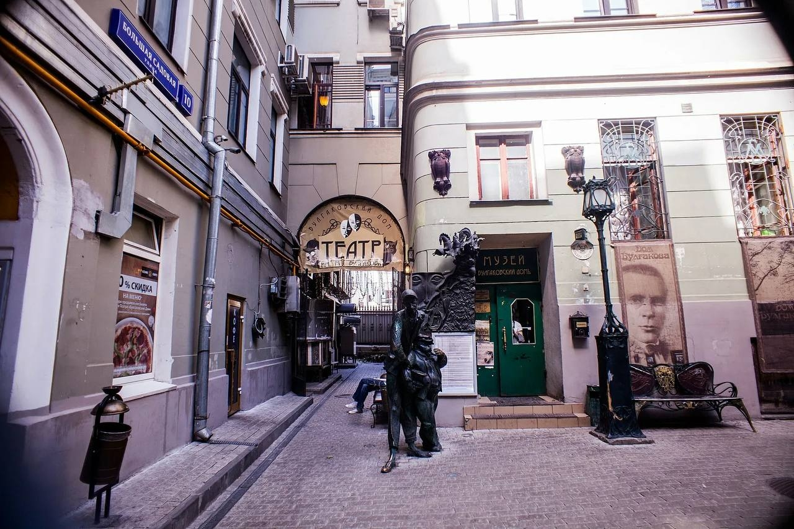
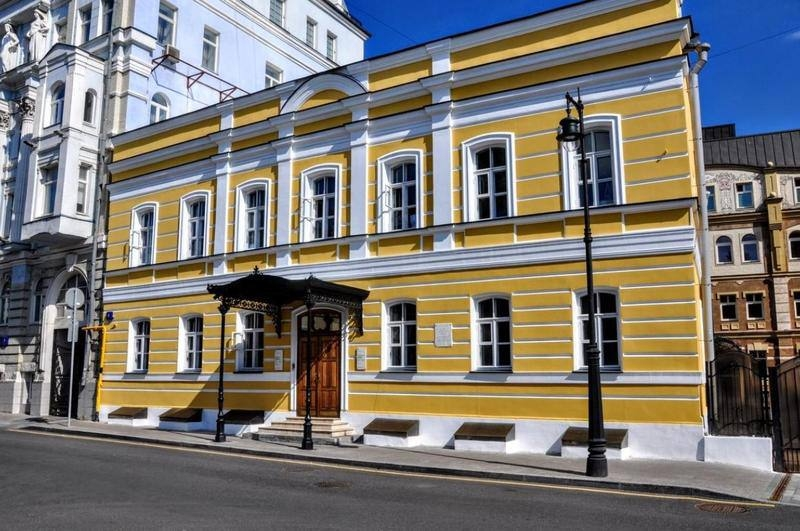
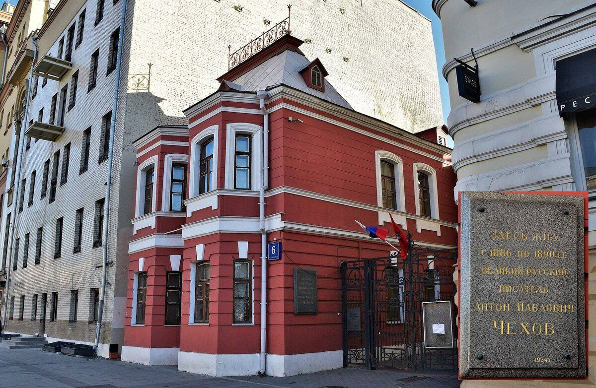

Мы, студентки факультета зарубежной филологии Московского Городского университета, представляем проект «Литературные места Москвы: аналитический маршрут по следам русских писателей». Это сайт, который помогает увидеть город через биографии и тексты авторов. Мы выбрали три адреса, связанных с разными судьбами: музей М.А. Булгакова («Нехорошая квартира»), дом-музей М.И. Цветаевой и мемориальная квартира А.П.Чехова. На нашем сайте вы найдёте маршрут по этим местам. Мы не просто перечисляем факты, а анализируем, как пространство Москвы отразилось в произведениях и жизни писателей. Сайт подойдёт тем, кто хочет совместить прогулку по городу с осмыслением знакомых текстов

Данный объект сердце булгаковской Москвы. Квартира № 50 в доме 10 по Большой Садовой улице — это главный «герой» многих произведений Булгакова. Именно здесь писатель прожил свой самый трудный, но и самый плодотворный московский период.

Этот дом — мемориальная квартира, где Цветаева жила с 1914 по 1922 год. Сама поэтесса называла квартиру «кучей комнат» из-за сложной планировки. Интерьер восстановлен по состоянию на 1910-е годы. На первом этаже находятся касса и выставочные залы для временных экспозиций. В здании также работает Научная библиотека и Архив Русского Зарубежья (с рукописями Бунина, Куприна, Мережковского). Есть концертный зал и «Кафе поэтов».

Этот дом Чеховы снимали с 1886 по 1890 год. Писатель называл его «домом-комодом» из-за формы. После реставрации 2023 года музей разделен на две части: мемориальные комнаты и литературная экспозиция. В части музея представлены прижизненные издания Чехова, театральные афиши, рукописи и фотографии. Экспонаты выложены в каталожных шкафах с выдвижными ящиками — их можно открывать самому. Среди интересных предметов: подлинные подтяжки, запонки и пенсне писателя.
Этот маршрут — не просто перемещение в пространстве, но и медленное, вдумчивое путешествие сквозь время. Вы прошли по страницам биографий трёх гениев, для которых Москва была не столько городом проживания, сколько соавтором, собеседником и, подчас, неумолимым роком.
Первой главой этого московского романа становится «Нехорошая квартира» № 50 на Большой Садовой. Булгаковская Москва — это карнавал теней, фантасмагория коммунального быта, где мистика прячется за вытертым плюшем портьер. Здесь, в пространстве, где грань между романом и реальностью истончается до предела, вы словно становитесь невольным свидетелем разговора Воланда с Берлиозом или визита кота Бегемота.
Совсем иное настроение ждёт вас в Доме-музее А. П. Чехова на Садовой-Кудринской. После булгаковского гротеска эта типовая купеческая усадьба дарит спасительную гармонию иронии и тихой печали. В чеховских комнатах проступает тот самый негромкий лейтмотив, знакомый каждому по рассказам классика: красота обыденности, за которой прячется экзистенциальная драма «маленького человека». Это пауза для вдумчивого дыхания.
И наконец, финал маршрута — Дом-музей Марины Цветаевой в Борисоглебском переулке. Здесь воздух, кажется, до сих пор вибрирует от высокого, надрывного накала её стиха. В камерном пространстве «волшебного дома» особенно остро ощущаешь, как сквозь бытовую неустроенность и трагизм эпохи прорастает неподвластная времени поэзия. Это самый пронзительный, эмоциональный аккорд прогулки.
Прогулка между этими точками — отдельное эстетическое удовольствие. Архитектурный ландшафт арбатских и садовых колец разворачивается перед вами живой лентой Модерна, Эклектики и благородной ветхости Старой Москвы. Это тот самый фон, без которого понимание «московского текста» русской литературы было бы неполным.
И, конечно, московское гостеприимство здесь под стать культурному контексту. Маршрут выстроен так, чтобы вы могли в любой момент позволить себе паузу. Ищете ли вы уединения за чашкой кофе с видом на знакомую по булгаковским сценам брусчатку или плотного обеда после долгой пешей прогулки — окрестные переулки предложат варианты на любой вкус и кошелёк.
Возвращаясь с этого маршрута, вы уносите с собой не только фотографии в телефоне, но и то особое послевкусие, которое бывает только после встречи с настоящей литературой — чувство пропитанности чужой судьбой и радость от того, что Москва всё ещё умеет рассказывать свои лучшие истории шаг за шагом.